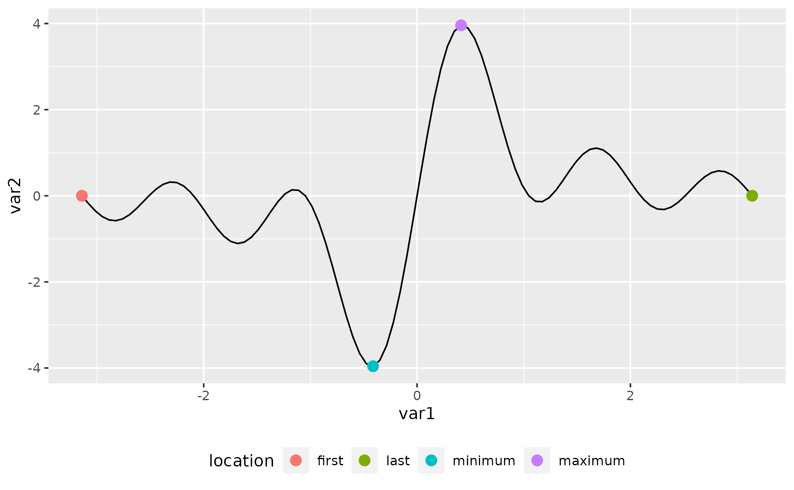
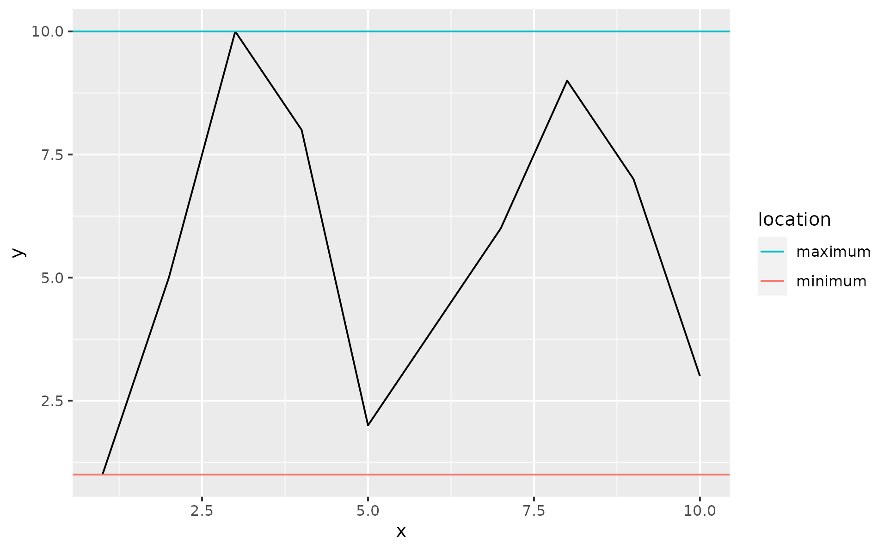
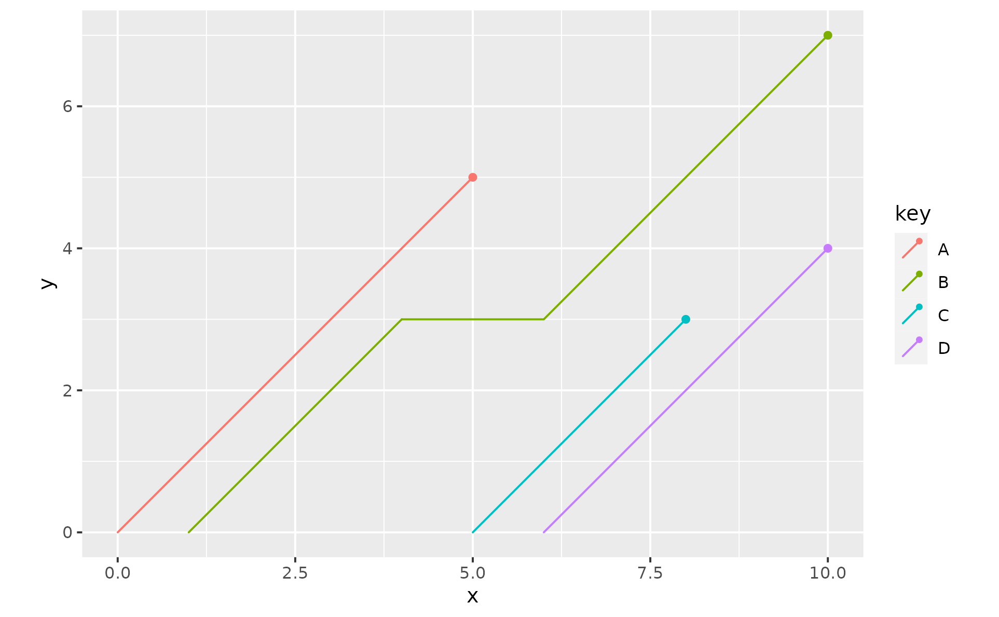
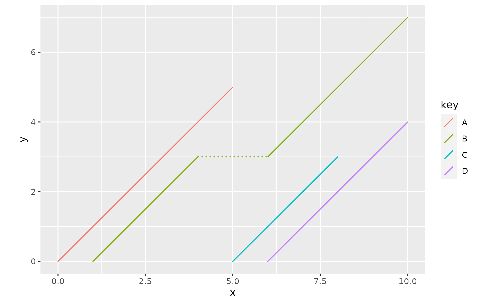
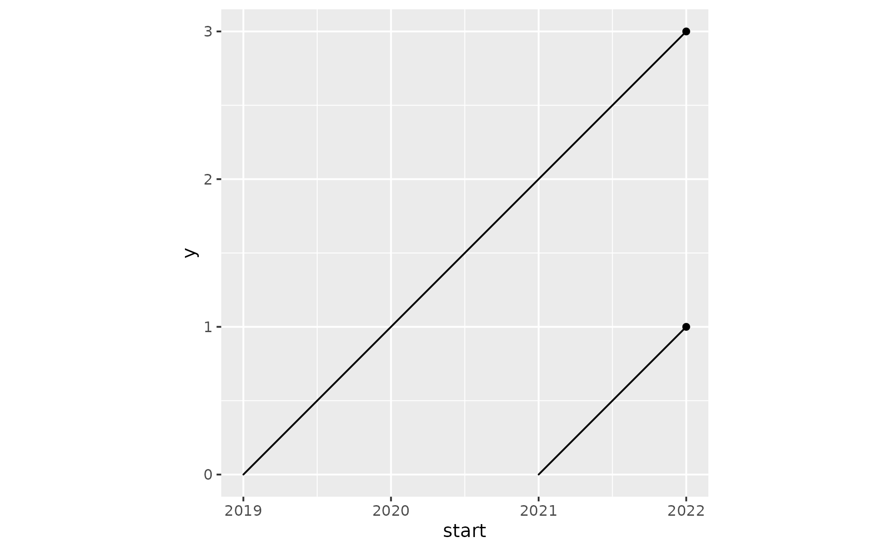

ggpointless is a small extension of the ggplot2 that provides two additional layers:
geom_pointless
geom_pointless() is a layer to easily add minimal emphasis to your plots. The function takes it’s power from stat_pointless(), which does all the work, but is not usually in the spotlight.
library(ggplot2)
library(ggpointless)
x <- seq(-pi, pi, length.out = 100)
y <- outer(x, 1:5, function(x, y) sin(x * y))
df1 <- data.frame(
var1 = x,
var2 = rowSums(y)
)
p <- ggplot(df1, aes(x = var1, y = var2))
p + geom_pointless(location = c("first", "last", "minimum", "maximum"))As you see, just adding geom_pointless() to ggplot(...) is not terribly useful on its own but when it teams up with geom_line() and friends, hopefully.
p <- p + geom_line()
p + geom_pointless(location = "all", size = 3)
geom_pointless() behaves like geom_point() does with the addition of a location argument. You can set it to "first", "last" (the default), "minimum", "maximum", and "all"; where "all" is just shorthand to select "first", "last", "minimum" and "maximum".
In addition, you can use the computed variable location and map it to an aesthetic, e.g. color.
p + geom_pointless(aes(color = after_stat(location)),
location = "all",
size = 3
) +
theme(legend.position = "bottom")
Order and orientation
The locations are determined in the order in which they appear in the data, like geom_path() does compared to geom_line(). This can be seen in the next example, with sample data kindly taken from the geomtextpath package:
x <- seq(5, -1, length.out = 1000) * pi
spiral <- data.frame(
var1 = sin(x) * 1:1000,
var2 = cos(x) * 1:1000
)
p <- ggplot(spiral) +
geom_path() +
coord_equal(xlim = c(-1000, 1000), ylim = c(-1000, 1000)) +
theme(legend.position = "none")
p + aes(x = var1, y = var2) +
geom_pointless(aes(color = after_stat(location)),
location = "all",
size = 3
) +
labs(subtitle = "orientation = 'x'")
p + aes(y = var1, x = var2) +
geom_pointless(aes(color = after_stat(location)),
location = "all",
size = 3
) +
labs(subtitle = "orientation = 'y'")

As you see from the first of the last two examples "first" and "minimum" overlap, and "first" wins over "minimum". If location is set to "all", then the order in which points are plotted from top to bottom is: "first" > "last" > "minimum" > "maximum".
Otherwise, the order is determined as specified in the location argument, which also applies to the order of the legend key labels.
cols <- c(
"first" = "#f8766d",
"last" = "#7cae00",
"minimum" = "#00bfc4",
"maximum" = "#c77cff"
)
df2 <- data.frame(
var1 = 1:2,
var2 = 1:2
)
p <- ggplot(df2, aes(x = var1, y = var2)) +
geom_path() +
coord_equal() +
scale_color_manual(values = cols)
# same as location = 'all'
p + geom_pointless(aes(color = after_stat(location)),
location = c("first", "last", "minimum", "maximum"),
size = 3
) +
labs(subtitle = "same as location = 'all'")
# reversed order
p + geom_pointless(aes(color = after_stat(location)),
location = c("maximum", "minimum", "last", "first"),
size = 3
) +
labs(subtitle = "custom order")
# same as location = 'all' again
p + geom_pointless(aes(color = after_stat(location)),
location = c("maximum", "minimum", "last", "first", "all"),
size = 3
) +
labs(subtitle = "same as location = 'all' again")Pick a different geom
Just like all stat_* functions, stat_pointless() has a default geom, which is "point". This means in reverse that you can highlight e.g. minimum and maximum in another way, for example with a horizontal line.
set.seed(42)
ggplot(data.frame(x = 1:10, y = sample(1:10)), aes(x, y)) +
geom_line() +
stat_pointless(
aes(yintercept = y, color = after_stat(location)),
location = c("minimum", "maximum"),
geom = "hline"
) +
guides(color = guide_legend(reverse = TRUE))
Plotting lifelines with geom_lexis
geom_lexis() draws a lifeline for an event from it’s start to it’s end. The required aesthetics are x and xend. Here is an example:
df1 <- data.frame(
key = c("A", "B", "B", "C", "D"),
x = c(0, 1, 6, 5, 6),
y = c(5, 4, 10, 8, 10)
)
p <- ggplot(df1, aes(x = x, xend = y, color = key)) +
coord_equal()
p + geom_lexis()
Also, if there is a gap in an event a horizontal line is drawn, which can be hidden setting gap_filler = FALSE.
p + geom_lexis(gap_filler = FALSE)You can further style the appearance of your plot using the additional arguments. If you e.g. want to make a visual distinction between the ascending lines and the connecting lines, use after_stat() to map the type variable to the linetype aesthetic (or any other aesthetic). The variable type is created by geom_lexis() and takes two values: “solid” and “dotted”; so you might also want to call scale_linettype_identity.
p + geom_lexis(
aes(linetype = after_scale(type)),
point_show = FALSE
) +
scale_linetype_identity()
#> Warning: Failed to apply `after_scale()` modifications to legend
Date and POSIXct classes
You see the coordinates on the vertical y-axis show the difference between x and xend aesthetics. The “magic” of geom_lexis() happens in stat_lexis() when the input data is transformed and the calculations are performed.
df1 <- data.frame(
start = c(2019, 2021),
end = c(2022, 2022),
key = c("A", "B")
)
ggplot(df1, aes(x = start, xend = end, group = key)) +
geom_lexis() +
coord_fixed()
Keeping in mind that dates are internally represented as the number of days, and the POSIXct class in turn represents seconds since some origin, the y-scale values in the next plots should come as no surprise.
# Date
fun <- function(i, class) as.Date(paste0(i, "-01-01"))
df1[, c("start", "end")] <- lapply(df1[, c("start", "end")], fun)
p1 <- ggplot(df1, aes(x = start, xend = end, group = key)) +
geom_lexis() +
labs(y = "days") +
coord_fixed()
# POSIXct
df2 <- df1
df2[, c("start", "end")] <- lapply(df2[, c("start", "end")], as.POSIXct)
p2 <- ggplot(df2, aes(x = start, xend = end, group = key)) +
geom_lexis() +
labs(y = "seconds") +
coord_fixed()
p1; p2

In order to change the breaks and labels of the vertical scale to, say, years, we make the assumption that 1 year has 365.25 days, or 365.25 * 86400 seconds.
# years, roughly
p1 +
scale_y_continuous(
breaks = 0:3*365.25, # or for p2: 0:3*365.25*86400
labels = function(i) floor(i / 365.25) # floor(i / 365.25*86400)
) +
labs(y = "years")Data
The ggpointless package contains the following data sets:
-
co2_ml: CO2 records taken at Mauna Loa -
covid_vac: COVID-19 Cases and Deaths by Vaccination Status -
female_leaders: Elected and appointed female heads of state and government
See the vignette("examples") for possible use cases.